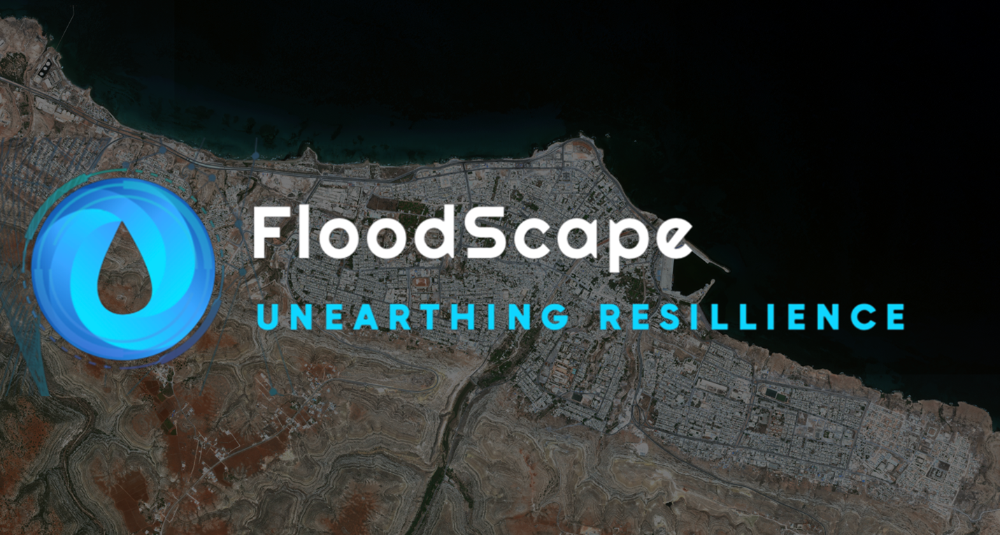

SMT 201 - Geographic Information Systems for Urban Planning

FloodScape: Unearthing Resilience
Access our github repository here: Github
Access our full project report here: OneDrive
This group project is an undergraduate assignment in the GIS for Urban Planning course taught by Dr. Kam Tin Seong, Associate Professor of Information Systems (Practice) at Singapore Management University. Find out more about the team here.
Project Theme: Urban Land Use/Land Cover (LULC) Change Detection for Flood Mapping Applications of Satellite Remote Sensing (Theme 1)
Project Summary
Our project focuses on a recent devastating flood in Derna, a city in North Africa, that killed thousands of people and damaged many major infrastructures after being hit by Storm Daniel. Our project is motivated by the desire to help the people of Derna recover from the recent flood and to build a more flood-resilient city for the future. Using Geographic Information Systems (GIS) analysis to measure the effects of the flood on lives and infrastructure, our project proposes a number of flood mitigation strategies to minimise damage from similar incidents in the future.
Our methodology involved collecting remote sensing data using open-access satellite data hubs, followed by a selection of various bands of each satellite imagery. We then used Land Use / Land Cover (LULC) classification algorithms to detect the LULC changes before and after the flood, placing a key focus on observing the effects on people through damage to residential houses and hospitals, as well as important infrastructure, such as arterial roads and cell towers. Finally, we identified a number of key strategies that policy planners can adopt to prevent the recurrence of such a catastrophe and, if not, mitigate the damages caused by the recurrence of such heavy storms and floods.
Introduction
Libya is a North African nation that has struggled with a series of natural disasters, primarily floods. Recently, the world witnessed Derna, a city situated along the eastern coast of Libya, endure a series of devastating floods causing detrimental humanitarian and infrastructural destruction, exacerbated by the nation’s political-military instability and history of neglect. However, while some may attribute the calamities solely to natural disasters, the devastation is mainly due to neglectful urban planning, inadequate public infrastructure maintenance, and years of political discourse. These incidents have only served to propel Libya towards a heightening humanitarian crisis.
Motivation
Our project is motivated by the desire to help the people of Derna recover from the recent flood and build a more resilient city for the future. We believe our analysis will serve as an important insight and tool for Derna’s policymakers to make informed urban planning decisions. By identifying areas at severe risk of flooding, policymakers will be able to develop targeted flood mitigation strategies to prevent and minimise flood damage from potential future storms or floods in Derna.
Objectives
- To detect land use/land cover changes before and after the Derna flood disaster using remote satellite imagery.
- To recommend flood mitigation strategies to ease damages from future disasters.